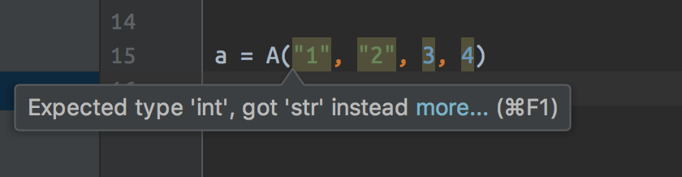

初尝
Python 3.7 引入了一个新的模块，这个模块就是今天要试探的 dataclass。
dataclass 的用法和普通的类装饰器没有任何区别，它的作用是替换定义类的时候的：
def __init__()
我们来看看如何使用它
1 | # 我们需要引入 dataclass 包 |
我们执行这段代码，得到结果
A(a=1, b=2, c='3', d='test')
可以看到，它的效果和
1 | class A: |
完全一样！使用了 dataclass 可以省下很多代码，可以帮我们节约很多时间，代码也变得很简洁了。
定义类型
我们发现，使用 dataclass 的时候，需要对初始化的参数进行类型定义，比如上面的例子里面，我为 a, b, c, d 定义的类型分别是 int, int, str 和 str。
那我建立实例的时候，传递非定义的类型的数据进去，会报错么？
答案是很明显的，是不会报错的，毕竟 python 是解释性语言嘛。
当然我们也要试试的
1 | a = A("name", "age", 123, 123) |
得到结果
A(a='name', b='age', c=123, d=123)
果然是不会报错的。
但是在 pycharm 之类的 IDE 里面，是会提醒修改的，这点很不爽

那么我们可以使用万能的类型的么？当然是可以的，但是不建议（毕竟现在都建议写
python 的工程师加上类型检查了）做法如下:
1 |
|
这样就可以随意传参了。
我们只需要随意给一个字符串就可以了，也可以事任何的其他类型
继承
使用了 dataclass 之后，类的继承还是之前的那样么？
我们来试试
1 |
|
就完了。
再来想想我们之前的继承 __init__ 是怎么写的
1 |
|
一对比，是不是上面的代码简洁太多太多了！简直的优化利器！
使用 make_dataclass 快速创建类
除此之外，dataclasses 还提供了一个方法 make_dataclass 让我们可以快速创建类
1 | from dataclasses import make_dataclass |
这个和
1 |
|
是完全一样的
尾言
我们只是初步的使用 dataclass 来替换了以往的 __init__ 而已，还有很多新带入的东西没有使用，比如 field 还有其他的强大的功能。
有兴趣的朋友可以看 PEP 557 获得更多信息
python dataclass
也可以期待我的下一篇: python 3.7 dataclass 浅析